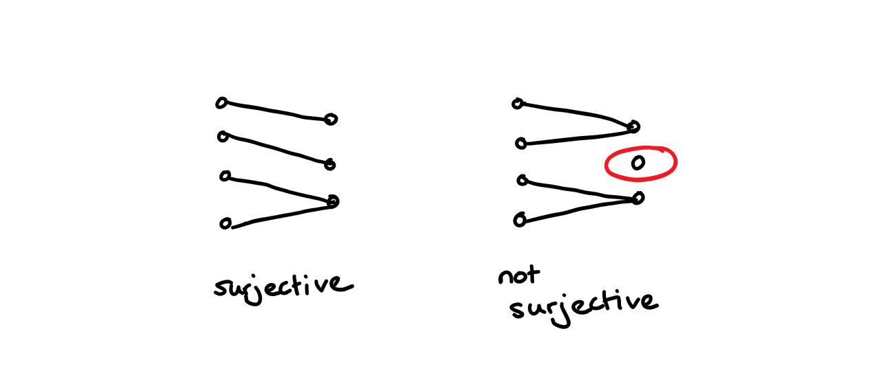

Chapter 4 Sets and Functions
4.1 What is a set?
We begin with sets which are one of the basic objects of mathematics. Set theory becomes very complicated very quickly when you begin to explore the subtleties. We will discuss some of the pitfalls and paradoxes in a non-examinable section later but first we focus on when things are simple.
Definition 4.1 (set) A set is a collection of mathematical objects.
To make sense of this definition we need to consider some examples of things that are and are not sets.
Example 4.1 The function \(y = x^2, x \in \mathbb{R}\) is not a set (it’s a function as we wrote). However we can form a set of the form \[ \{(x,y)\,:\, x \in \mathbb{R}, y \in \mathbb{R}, y=x^2 \}. \]
Example 4.2 The natural numbers \(\mathbb{N} = \{0,1,2, 3, 4, \dots\}\) is a set. We can see in this and the previous example that you can often recognise sets because they have curly brackets around them. However, this is not foolproof. We can write this set as \(\mathbb{N}\) and there are no curly brackets.
If you haven’t seen it before remember this notation for the natural numbers. It will come up a lot!
This example also has another bit of common mathematical notation in its. The set of three dots at the end of the sequence of numbers. This indicates that the sequence will continue as you would expect it to.
Example 4.3 Sets can also have a finite number of elements. For example the following set \(\{12\}\) which contains only the integer 12. As with the first example with a function, we make a distinction between the object which is the integer 12 and a set that contains only the integer 12.
Example 4.4 All the examples of sets above involve mathematical objects which are numbers (or pairs of numbers in the first example). We aren’t limited to this. We might consider the set of all polynomials with integer coefficients (where all the elements are functions) or the set of all sequences of real numbers tending to zero (where all the elements are sequences). You can also consider sets with a mixture of different types of elements. e.g. \[ \{ 4, (\pi, \pi^2), \{1/n \,:\, n \in \mathbb{N}, n \neq 0 \}, \mbox{the function}\, f(x) = x^2\}. \] Here notice that one of the elements of this set is a set itself. This is perfectly possible.
We need to be able to talk and write about sets. We often give sets names (usually a letter) and we write
\[ A = \{1,2,7\}. \]
We then want to be able to say whether something is or isn’t in the set so we write \[ 1 \in A \] to mean \(1\) is in the set \(A\) or \(1\) is an element of the set \(A\). We also write \[ 3 \notin A \] to mean that \(3\) is not an element of the set \(A\) or that 3 isn’t in \(A\).
Definition 4.2 There are some important sets which have their own symbols and names. You have probably met them before:
The natural numbers, \(\mathbb{N}= \{1,2,3,\dots\}\),
The integers, \(\mathbb{Z} = \{ \dots, -3, -2, -1, 0, 1, 2, 3, \dots \}\),
The rationals, \(\mathbb{Q} = \{p/q \,:\, p \in \mathbb{Z}, q \in \mathbb{N}\}\),
The real numbers, \(\mathbb{R} = (-\infty, \infty)\),
The complex numbers, \(\mathbb{C} = \{x+iy \,:\, x \in \mathbb{R}, y \in mathbb{R}\}\) where \(i\) is the complex unit.
Definition 4.3 (equality of sets/axiom of extension) Two sets are equal (the same) if they have exactly the same elements. We call this the axiom of extension. We can write it in formal language as: if for every \(x \in X\) we have \(x \in Y\) and for every \(y \in Y\) we have \(y \in X\) then \(X=Y\).
Remark. It might seem obvious at this point that any two sets with the same element are the same. However there are two important ways this comes up.
In a proof we might write a set in two very different ways for example \([0,\infty) = \{ x \in \mathbb{R} \,:\, \mbox{there exists}\, y \in \mathbb{R}\, \mbox{s.t.} y^2 = x\}\).
We might end up writing a set in a way that means some element appears in the representation multiple times e.g. \(\{0\}\) and \(\{0, 0\}\). The axiom of extension makes it clear that these are both the same set. It also tells us that there aren’t multiple different sets containing only the element \(0\) there is just one the set \(\{0\}\).
At this point it is useful to introduce some notation that you may or may not have seen before.
Definition 4.4 There are several shorthand notations used in maths and particularly in logic. Some are more common than others and it is always okay and often wise not to overuse symbols. We might use the following:
-We use the symbol \(\forall\) as a shorthand for the phrase for every or for all.
-We use the symbol \(\exists\) to mean there exists or there is at least one.
-We use the symbol \(\Rightarrow\) to mean implies and (much less often) the symbol \(\Leftarrow\) to mean is implied by.
-We use the symbol \(\Leftrightarrow\) to mean if and only if which we also sometimes abreviate to iff. If and only if is a common phrase in pure maths but it might sometimes be easier to say exactly when to mean the same thing.
Using this we can write the axiom of extension as \[ \forall A \forall B ( (x \in A \Leftrightarrow x \in B) \Leftarrow (A=B)). \] Which is a good illustration of why its often better to use words!
Given that sets are defined by their elements we sometimes need to consider that set that doesn’t have any elements at all.
Definition 4.5 (the empty set) There exists a set which contains no elements. We call this the empty set and write it with the symbol \(\emptyset\).
Remark. Here if you’ve been paying attention you’ll notice that \(\emptyset \neq \{\emptyset\}\). The first contains no elements, the second contains one element which is the empty set. You can also have \(\{\emptyset, \{\emptyset\}\}\) and \(\{\emptyset, \{\emptyset\}, \{\{\emptyset\}\}\}\) and so on if you would like to reassure yourself that there exists a set containing \(k\) elements for any \(k \in \mathbb{N}\) but you are unconvinced of the existence of the natural numbers. (If you are in this position you might be Bertrand Russell.)
4.2 Subsets
You might be interested in looking at only part of a set. This is called a subset.
Definition 4.6 (Subset) If \(X\) and \(Y\) are sets and for every \(x \in X\) we have that \(x \in Y\) then we say \(X\) is a subset of \(Y\) which we write \[ X \subset Y. \]
- Example 4.5
- \(1\) is not a subset of \(\{1\}\).
- The even numbers are a subset of \(\mathbb{N}\).
- \(\{1\}\) is a subset of \(\mathbb{N}\).
- \(\{1\}\) is not a subset of \(\{\{1\}\}\).
Remark. Sometimes when you are writing you wish to specify the set and the subset in a different order. We write \(Y \supset X\) and this expresses exactly the same information as \(X \subset Y\). When we read the expression \(Y \supset X\) we say \(Y\) contains \(X\) or \(Y\) is a superset of \(X\).
The following is also always true
Lemma 4.1 For any set \(X\) we have
\(\emptyset \subset X\),
\(X \subset X\)
Proof. Remember to show that \(Y \subset X\) we need to show that for every \(y \in Y\) we have that \(y \in X\).
For the first statement since there are no elements of the empty set so absolutely any statement about every element of the empty set is true.
For the second statement if \(x \in X\) then tautologically \(x \in X\) so we have \(X \subset X\).
Following from this we have
Lemma 4.2 For two sets \(X, Y\) the following are equivalent: 1. \(X = Y\), 2. \(X \subset Y\) and \(Y \subset X\).
Proof. Exercise!
Definition 4.7 We call a set which contains only one element a singleton set.
We also define some notation
Definition 4.8 We write \([[n]]= \{ k\in \mathbb{N}, k \leq n\}\).
4.3 Power sets and specification
Definition 4.9 Given a set \(X\) there exists another set \(\mathcal{P}(X)\) called the power set of \(X\) which is the set of all possible subsets of \(X\).
Example 4.6 The power set of \(\{0,1,2\}\) is \[ \{ \emptyset, \{0\}, \{1\}, \{2\}, \{0,1\}, \{0,2\}, \{1,2\}, \{0,1,2\}\}. \]
Definition 4.10 (specification) Specification is a way of constructing subsets of a set (we’ve done this a lot already). Suppose \(P(x)\) is a property that an element \(x\) of \(X\) could have. Then we can define the set \[ Y = \{ x \in X \,:\, P(x)\}. \]
The axiom of specification is the set theory axiom positing that such a set exists. In this we would need a more precise notion of what a property is.
Example 4.7 The very first set we defined was defined using specification \[ \{(x, y)\,:\, x \in \mathbb{R}, y \in \mathbb{R}, y=x^2\}. \]
4.4 Functions
Definition 4.11 (function) A function is comprised of three objects, a domain \(X\) which is a set, a co-domain \(Y\) which is another set and a rule \(f\) which assigns an element \(f(x) \in Y\) to each element \(x\) of \(X\).
We write \(f: X \rightarrow Y\).
Example 4.8 \(f(x) = x^2 : \mathbb{R} \rightarrow \mathbb{R}\) is a function and technically \(f(x) = x^2: \mathbb{R} \rightarrow [0,\infty)\) is a different function.
A function can only take one value so we have to be careful when dealing with things like square roots. Similarly a function needs to take exactly one value so we also need to make sure it is defined everywhere.
Definition 4.12 If \(f: X \rightarrow Y\) is a function then if \(y = f(x)\) we call \(y\) the image of \(x\) under \(f\). We also call \(x\) a preimage of \(y\) under \(f\).
Notice that an element of \(X\) can have only one image but an element of \(Y\) can have multiple or zero preimages.
Definition 4.13 The identity function on \(X\) is written \(Id_X : X \rightarrow X\) and is defined by \(Id_X(x)=x\).
4.5 Properties of functions
Definition 4.14 (injectivity) A function \(f:X\rightarrow Y\) is called injective if \(f(x)=f(x')\) implies that \(x=x'\). That is to say there are no two elements of \(X\) where \(f(x)\) takes the same value, or \(y\) has at most one preimage under \(f\).
Example 4.9 The function \(f: \mathbb{R} \rightarrow \mathbb{R}\) defined by \(f(x) =x^2\) is not injective because for every \(y>0\) there are two possible values of \(x\) such that \(x^2 = y\).
However, the function \(f: [0, \infty) \rightarrow \mathbb{R}\) is injective because now for every \(y\geq 0\) there is exactly one \(x\) such that \(x^2=y\) and for every \(y <0\) there are no elements \(x\) in the set such that \(x^2 = y\) (so for any \(y\) in the codomain there is never more than one element \(x\) in the domain so that \(x^2 = y\)).

Definition 4.15 (surjectivity) A function \(f: X \rightarrow Y\) is called surjective if for every \(y \in Y\) there exists \(x \in X\) with \(f(x)=y\). That is to say the function \(f\) hits every element of the set \(Y\) or that \(y\) has at least one preimage under \(x\).
Example 4.10 The function \(f:\mathbb{R} \rightarrow \mathbb{R}\) defined by \(f(x) = x^2\) is not surjective because for \(y<0\) there is no element \(x\) of the domain so that \(x^2=y\).
However, the function \(f: \mathbb{R} \rightarrow [0,\infty)\) is surjective because for every element \(y\) of the codomain we have some \(x\) in the domain with \(x^2 =y\).

Definition 4.16 (bijectivity) A function is called bijective if it is both surjective and injective.
Remark. Bijective functions are often called matchings because if \(f: X \rightarrow Y\) is a bijection then we match every element of \(x\) with an element of \(Y\).

4.6 Cardinality
If \(f: X \rightarrow Y\) is a bijection then that tells us something important about the relationship between \(X\) and \(Y\).
Definition 4.17 (Cardinality) We say that \(X\) and \(Y\) have the same cardinality (informally the same size) if there exists a bijection between \(X\) and \(Y\). We often write \(|X| = |Y|\).
Definition 4.18 (Finiteness) Cardinality allows us to give a rigorous notion for a set to be finite/have a finite number of elements.
Given a set \(X\), if there is some natural number \(n\) such that \(|X|=|\{1,\dots,n\}|\) then we say \(X\) has size \(n\).
If \(X\) has size \(n\) for some \(n\) then we say \(X\) is finite.
Definition 4.19 (infinite) We say a set is infinite if it isn’t finite.
Theorem 4.1 (Cantor's Theorem) Let \(X\) be a set and \(f: X \rightarrow \mathcal{P}(X)\) then \(f\) cannot be a surjection.
You could also say: there is no surjection between a set and its power set.
Remark. One implication of this theorem is that a set cannot be the same size as its power set. This is obvious for finite sets; if \(|X|=n\) then \(|\mathcal{P}(X)|= 2^n\) but it isn’t clear for infinite sets.
Proof. We notice that for every \(x \in X\) we have \(f(x)\) which is a subset of \(X\). This brings up two possibilities we could have \(x \in f(x)\) or \(x \notin f(x)\). We can form a set \(C\) by writing \[ C = \{ x \in X\,:\, x \notin f(x)\}. \]
Now suppose for contradiction that \(f\) is surjective. This implies that there exists some \(c \in X\) such that \(f(c) = C\).
Now there are two possibilities.
\(c \in C\) which is a contradiction because we defined \(C\) to be the set of \(x\) for which \(x \notin f(x)\).
\(c \notin C\) which is also a contradiction because then if \(C\) is the set of all \(x\) for which \(x \notin f(x)\) so should contain \(c\).
Therefore we have a contradiction to \(f\) being surjective.
4.7 Ordered pairs and Cartesian products
Definition 4.20 (ordered pairs) If we have two sets \(X\) and \(Y\) and \(x \in X, y \in Y\) then we can form an ordered pair of these two elements that we write \((x,y)\).
Remark. Here we say ordered pair because the order matters. So \((1,2) \neq (2,1)\). This is different to how sets behave where \(\{1,2\} = \{2,1\}\). Also unlike setes we keep repeats. We can have a pair \(x,x\) if \(x \in X\) and \(x \in Y\) and this is different to the element \(x\).
Definition 4.21 (cartesian product) Given two sets \(X\) and \(Y\) we can form a new set \(X \times Y\) called the Cartesian product of \(X\) and \(Y\) and defined by \[ X \times Y = \{ (x,y) \,:\, x \in X, y \in Y\}. \]
Remark. We have a special notation for the Cartesian product between a set and itself. We write \[ X^2 = X \times X, \] and \[ X^n = X \times X^{n-1}. \] You will have probably seen this before e.g. \(\mathbb{R}^d\).
4.8 Relations
Relations are an important mathematical object that you might not have thought about before. At first they seem quite similar to functions but they can appear in a very different settings. We are going to define relations partly in order to allow us to give a more bullet proof definition of what a function is, and partly because we will return to them later in the very important topic of equivalence relations.
Before we define them formally let us look at some examples.
For a generic relationship \(R\) we write \(x\) and \(y\) are related under \(R\) by \(xRy\). Here the ordering matters as you can see in the example.
Example 4.11 We can relate two real numbers \(x\) and \(y\) with the relationship is less than. So we can write \(xRy\) if \(x <y\).
Example 4.12 Is equal to is also a relation. This can be more complicated that just trivially equating elements of the same set. For example we might want to write a relation between \(\mathbb{N}\) and \(\mathbb{R}\) by equating integers with their counterpart in the natural numbers. This is very subtle, and not very useful, so if it doesn’t make sense don’t worry!
Remark. Something that isn’t a relation but might seem similar is a property. So for example the statement \(3\) is a prime number is just talking about a property that may or may not hold for the integers. We can come up with a relation to the set \(\{1\}\) by saying \(n R 1\) if and only if \(n\) is prime.
The formal definition of a relation is as follows
Definition 4.22 (relation) A relation consists of three parts
A set \(X\) called the domain,
A set \(Y\) called the co-domain
A subset of \(X \times Y\).
Using the notation from before we write \(xRy\) iff \((x,y)\) is in the subset of \(X \times Y\) defining the relation.
We can represent the relation is less than with the PICTURE.
Definition 4.23 (Graphical relations) Given a relation with a domain \(X\), codomain \(Y\) and subset \(G\) we call the relation graphical if for every \(x \in X\) there exists exactly one \(y \in Y\) such that \((x,y) \in G\) (alternatively xGy).
Example 4.13 The relation is less than is not graphical from \(\mathbb{R}\) to itself because for every \(x\) there are many \(y\) with \(y < x\).

The relation is the square of is not graphical from \(\mathbb{R}\) to itself because if \(x\) is negative then it isn’t the square of any real number so there are no \(y\)s with \(xRy\).

The relation is the cube of on \(\mathbb{R}\) is graphical because for every \(x \in \mathbb{R}\) there is exactly one \(y \in \mathbb{R}\) such that \(x=y^3\).

Remark. A function and a graphical relation are essentially the same thing. Given a graphical relation \(X,Y,G\) we can write a function \(f\) from \(X\) to \(Y\) by saying \(f(x)\) is the unique \(y \in Y\) such that \(xGy\). This is a way of more rigorously defining a function.